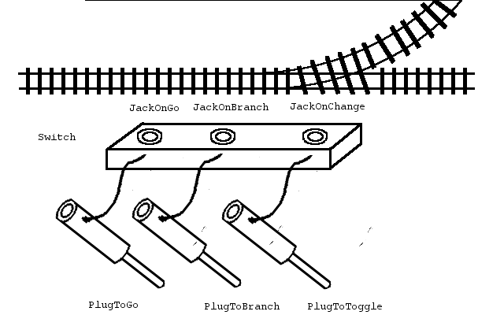

"Das hier ist keine Modelleisenbahn"
- Klaus Lage
A lot of rigid logical connections have to be made in railroading. E.g. there are switches and there might be lanterns along the track to show the state of the switch. Also there might be signals to interact with the trains and then their semaphores to show the state of the logical signal. Another application is a sensor in the track that registers a wheelset rolling over it. Yet another application is to play sounds on certain events inside the railroading system; e.g. a rolling stock starts rolling and that triggers a looped sound to play that would be stopped again when the rolling stock stops rolling.
A Plug gets inserted into a Jack. Then it would receive the Jack's pulses. Typically the Plug is very specific; let's say it switches the light on in a building. The Jack also would be typically very specific, say it is part of a sensor to detect the brightness of the environmental light and would trigger a pulse if it falls under a certain level. Then a simple decision to plug these two sockets together would turn on the light in the appropriate moment.
If there would be more than one lamp, we would like to not have to place several redundant sensors. For this a Plug has itself a Jack to insert further Plugs in it:
If it comes to railway stuff, we might have a switch that has two possible states to switch to: 'go', meaning the straight line and 'branch', meaning the diverting route. Now we provide Plugs N' Jacks to either trigger the switch to those settings or trigger something else if it gets setted by what cause soever:
The first application of this might be to connect it with a lamp that clearly shows the state of the switch:
This way the semaphore always would show the actual status of the switch and a change of the semaphore would trigger the switch. Many of the trax entities offer such Plugs and Jacks to their discrete settings. Every Plug will be compatible with every Jack, giving endless combinations to try out.

A word of warning is appropriate at this point. Even if we provide logical elements like counters and timers and all these form a turing-complete system, it is very advisable to keep the connection patterns simple and don't try tricks, because there are no tools for debugging or testing a complex system of Plugs N' Jacks connected elements. It is exclusively meant to tie simple elements together in a simple way, or to build logical blocks like a barrier that would close while some sensors that detect wheelsets would count a counter up and down, and that barrier would open if the counter becomes zero again.
In railUnreal we typically provide multicast delegates that broadcast by receiving the respective pulse. But note from image 2, that the Plugs N' Jacks system is deterministic about the order of the pulses, while Unreal's multicast delegates do not guarantee which listener will be notified first - or second, or third.
It is by design that there is only a so called 'pulse' that gets broadcasted. If you ever feel the need to transfer some data with the pulse, your Plugs N' Jacks circuit is already way to complicated: resort to C++, Blueprint or some scripting language to do the task.